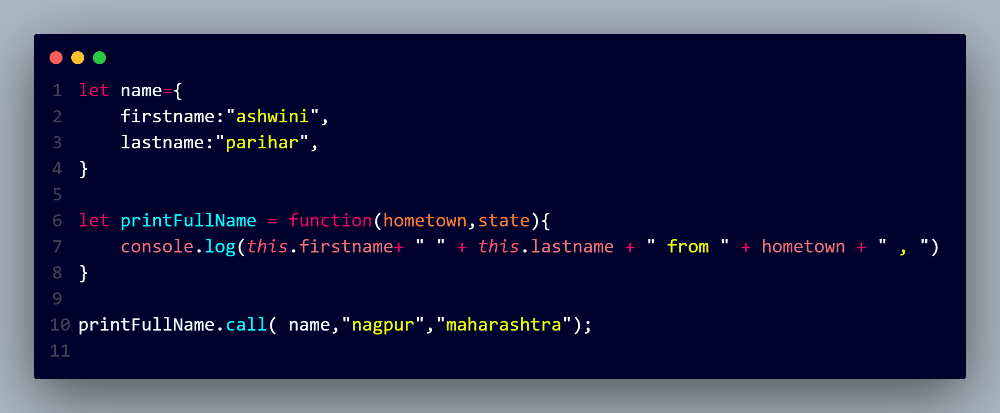
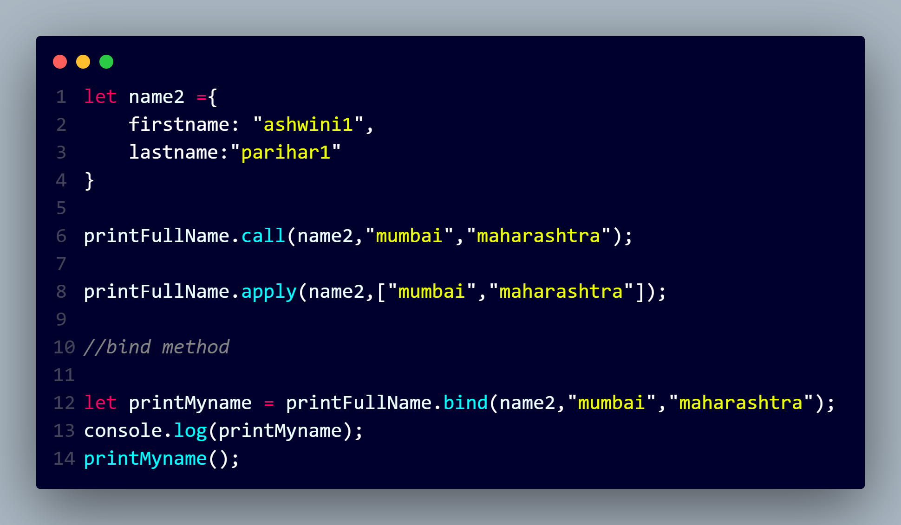

Function borrowing in JavaScript refers to the practice of using a method from one object on another object. This is possible because functions in JavaScript are not tied to the objects they are defined on; rather, they can be executed in the context of different objects. Function borrowing is commonly used when you have a function defined on one object and you want to use it with another object without duplicating the code.

